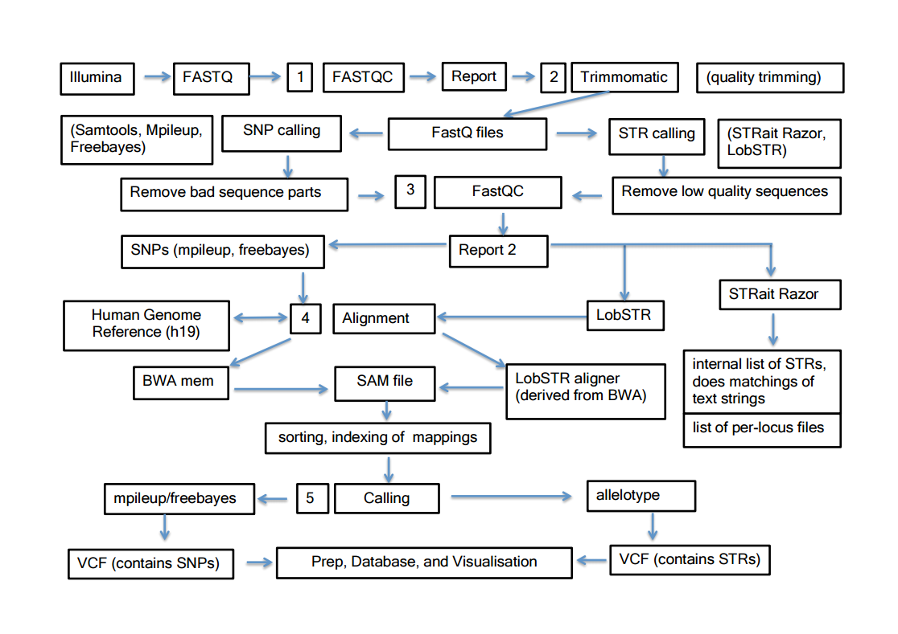

There are four pipelines incorporated in the MPS Forensics pipeline. Each pipeline is accessible through a tab in the main application window. All pipelines are capable of working with BAM or FASTQ (fq/fq.gz) inputs and have the ability to auto-detect matching paired-ends, should this data be present. Depending on the input data, some pipelines may work best with single end data.
The SNP calling pipeline incorporates both Samtools Mpileup and Freebayes for calling SNVs. The full suite of options affecting calling are made available to the user. Only those options that would modify the shape of the output data are not included as this would likely break the pipeline.
LobSTR has a dedicated pipeline for calling Short Tandem Repeats(STRs). This pipeline closely resembles the SNP calling pipelines as it uses the same fundamental architecture to perform its task, however it does come with a modified set of standard pipeline options/tool arguments.
STRait Razor a has a dedicated pipeline for calling STRs as it works using a completely different method from the other tools. It has very limited options for customising its operation, which is simply a reflection on its methodology.
Lastly a separate tabbed pipeline exists for converting BAM files to FASTQ format. This is not strictly necessary as each pipeline can work directly with BAM input, but there may be other occasions where this is capability is useful.
The diagram below gives an overview of the data flows through the various pipelines.
